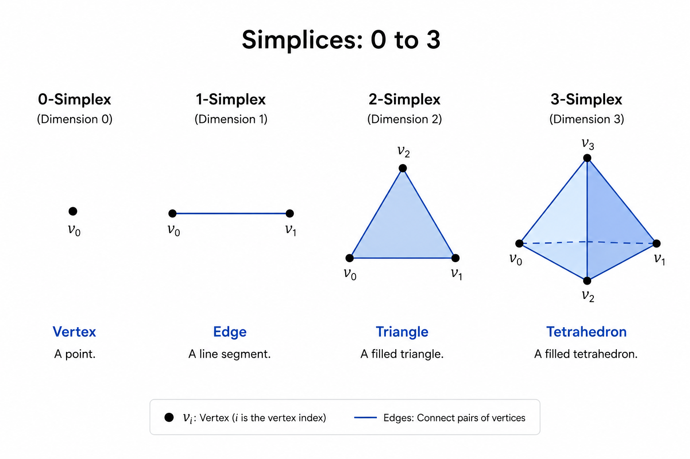

The Math Behind Variational Autoencoders
Something here
Simplices
The first concept is the k-simplex. The k-simplex is some geometric primitive of some given dimension k For example, the 0-simplex is a vertex, 1-simplex an edge, 2-simplex a triangle, 3-simplex a tetrahedon, etc

Face
The face of a simplex a subset of the simplex. For example the face of a triangle: 1-dimensional faces: Its 3 edges. 0-dimensional faces: Its 3 vertices (corners).
Simplical complex
A simplical complex is a collection of simplices.